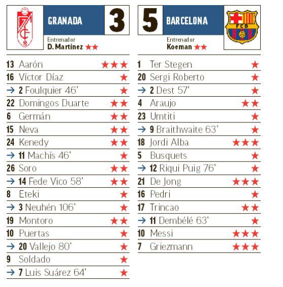

El Granada cae eliminado frente al Barcelona, pese a pelear y dar la cara
El Barcelona jugó con fuego en Granada. En un partido loco, estuvo a punto de quemarse, perdía 2-0 en el minuto 88, pero se clasificó para las semifinales gracias a un gol de Aarón en propia puerta y otro de Jordi Alba sobre la bocina que forzaron una prórroga en la que los goles de Griezmann, De Jong y Jordi Alba, de nuevo, decidieron. Los de Diego Martínez vendieron muy cara su derrota y estuvieron a punto de repetir semifinales como en la anterior temporada. Koeman dijo que la Copa era la opción más clara de ganar un título y se lo tomó muy en serio sacando en Los Cármenes un once titularísimo con la única salvedad de Trincao por Dembélé. Pero le costó lo indecible superar a un gran Granada al que encerró en su área casi todo el partido, pero falló a la hora de la definición, algo habitual esta temporada. Los de Diego Martínez rozaron las semifinales. Defendieron bien, aguantaron atrás y golpearon cuando bajó la guardia el rival. Pero les sobró un minuto. Tenían bajas serias en el centro del campo como Milla, Herrera o Gonalons, pero aún así supieron aprovechar los errores del rival y tener el partido ganado hasta el minuto 91. Dos errores de Umtiti y Griezmann asestaron dos duros golpes que dolieron y mucho en la autoestima de un Barça que se veía muy superior en el partido. Pero los goles de Kenedy y Soldado fueron igualados en los últimos cinco minutos. En la prórroga supieron reaccionar al gol de Griezmann con un penalti marcado por Fede Vico, pero después De Jong y Jordi Alba dejaron el marcador en el 3-5 definitivo. El Barça salió con una marcha más al partido y al Granada no le quedó otra que recular ante la que se le venía encima. Doble ocasión de Messi y Trincao que resolvió bien Aarón antes del minuto 10, disparo de Griezmann que acaba en córner, libre directo de Messi buscando la escuadra que para el meta local, disparo de Sergi Roberto que para en dos tiempos Aarón... pero quien marcó fue el Granada. En su segunda llegada al área de Ter Stegen, un error de Umtiti a la hora de intentar sacar el balón jugado acabó con un robo de Puertas que acabó en Soro y el centro de este lo remató Kenedy a la red adelantándose a Sergi Roberto. El 1-0 al descanso no era justo, pero las ocasiones hay que materializarlas.
